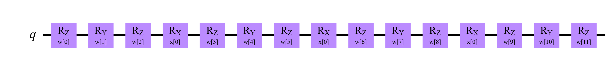
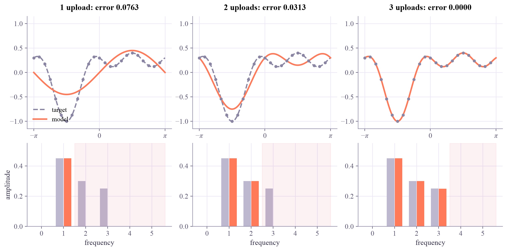
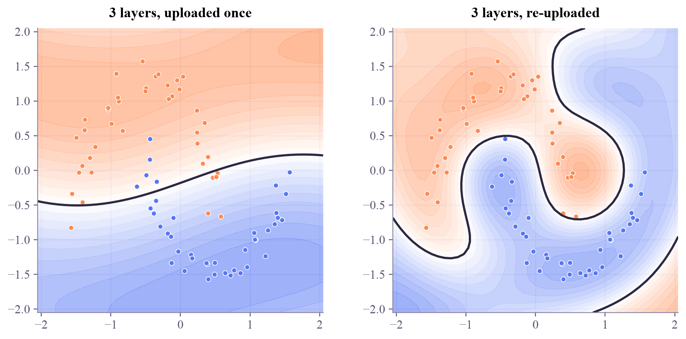

Quantum Machine Learning
 about 15 min
about 15 min qml-w3d4.ipynb
qml-w3d4.ipynb
Data re-uploading
A circuit that loads x through rotation gates computes a Fourier series in x. The encoding decides which frequencies exist; the trainable gates only choose their amplitudes. Upload more often, get more frequencies.
In this lesson you will
- Explain why a circuit with L uploads of x is a Fourier series with frequencies up to L
- Fit a target that needs frequency 3, and see why trainable gates alone can't add frequencies
- Unstick Monday's moons by re-uploading, and reach higher frequencies with parallel uploads too
Warm-up
1 minMonday's mystery

On Monday, the classifier got stuck on the moons at 87.5% training accuracy, and adding trainable layers didn't move it. More knobs usually means more flexibility, so what was missing? Today's answer is one of the nicest results in QML: a quantum model is a Fourier series, and the encoding decides which frequencies it may use.
Big idea
4 minQuantum models are Fourier series
Take one qubit and upload with . Its matrix entries contain . The expectation value multiplies amplitudes by complex conjugates of amplitudes, so the exponents combine to with . Whatever the trainable gates around it do:
Upload a second time and every amplitude picks up another : frequencies up to 2. With uploads,
This is the key point: the encoding fixes the menu of frequencies; the trainable gates only choose the amounts. Two trainable rotations in a row are just another rotation, so adding them between the same uploads can't add frequencies. Only more uploads can: one after another on the same qubit (re-uploading), or side by side on several entangled qubits (parallel uploads).
Now Monday's mystery: one upload per feature gave the classifier only , and of each feature, 9 combinations in all, too few shapes to wrap around the moons. Upload the point in each of 3 layers and each feature gets frequencies up to 3. The flip side, as with polynomial degree in the ML tutorial: more frequencies also means more ways to overfit.
A circuit that uploads through rotation gates computes a Fourier series with frequencies 0 to : the encoding sets the menu, the trainable gates choose the amounts, and only more uploads make the model richer.
Play
4 minMore uploads, more frequencies
One qubit, uploads of with a trainable rotation around each. The target is made of frequencies 1, 2 and 3. Press Fit and watch both the curve and its spectrum.
Try this
With 1 upload, the fit copies the frequency-1 bar exactly and ignores the rest: that's the best it can do. Try 2 uploads, then 3: the curve snaps onto the target. Try a few random starts with 1 upload: the error ends at exactly the same value every time. No amount of training reaches what isn't on the menu.
Code
3 minFourier series in Qiskit
The notebook for this lessonEvery code cell below, with what it printed, is in
qml-w3d4.ipynb. To change the code and run it yourself, open the notebook in Google Colab (free, in your browser) or download it for your own Jupyter.import numpy as np
from qiskit import QuantumCircuit
from qiskit.circuit import ParameterVector
from qiskit.quantum_info import SparsePauliOp
from qiskit.primitives import StatevectorEstimator
estimator = StatevectorEstimator()
def one_qubit_model(L):
"""A trainable rotation W_0, then L times: upload x with RX(x), then another trainable W_l = RZ·RY·RZ."""
x, w = ParameterVector("x", 1), ParameterVector("w", 3 * (L + 1))
qc = QuantumCircuit(1)
for l in range(L + 1):
if l > 0:
qc.rx(x[0], 0) # upload number l
qc.rz(w[3 * l], 0)
qc.ry(w[3 * l + 1], 0)
qc.rz(w[3 * l + 2], 0)
return qc
def evaluate(circuit, xs, weight_sets, observable="Z"):
"""⟨observable⟩ for every x and every weight vector: shape (weight sets, points)."""
rows = np.array([np.concatenate([W, np.atleast_1d(x)]) for W in weight_sets for x in xs])
evs = estimator.run([(circuit, SparsePauliOp(observable), rows)]).result()[0].data.evs
return evs.reshape(len(weight_sets), len(xs))
one_qubit_model(3).draw("mpl", style="clifford")What it printed in the notebook
def spectrum(values):
"""Amplitudes of the frequencies 0 to 5 of a real function sampled on 64 evenly spaced points."""
c = np.fft.fft(values) / len(values)
return np.r_[np.abs(c[0]), 2 * np.abs(c[1:6])]
grid = np.linspace(-np.pi, np.pi, 64, endpoint=False)
rng = np.random.default_rng(0)
for L in (1, 2, 3):
model = one_qubit_model(L)
for trial in range(2):
W = rng.uniform(0, 2 * np.pi, size=model.num_parameters - 1)
print(f"L = {L}, random weights {trial + 1}: amplitudes of frequencies 0..5 =", spectrum(evaluate(model, grid, [W])[0]).round(3))What it printed in the notebook
L = 1, random weights 1: amplitudes of frequencies 0..5 = [0.88 0.112 0. 0. 0. 0. ] L = 1, random weights 2: amplitudes of frequencies 0..5 = [0.802 0.161 0. 0. 0. 0. ] L = 2, random weights 1: amplitudes of frequencies 0..5 = [0.511 0.169 0.468 0. 0. 0. ] L = 2, random weights 2: amplitudes of frequencies 0..5 = [0.338 0.822 0.268 0. 0. 0. ] L = 3, random weights 1: amplitudes of frequencies 0..5 = [0.055 0.476 0.307 0.135 0. 0. ] L = 3, random weights 2: amplitudes of frequencies 0..5 = [0.13 0.52 0.608 0.142 0. 0. ]
target = lambda x: 0.45 * np.sin(x) + 0.3 * np.cos(2 * x) - 0.25 * np.sin(3 * x)
xs = np.linspace(-np.pi, np.pi, 24, endpoint=False)
def fit(L, steps=150, lr=0.1, seed=0):
model = one_qubit_model(L)
W = np.random.default_rng(seed).uniform(0, 2 * np.pi, size=model.num_parameters - 1)
m, v = np.zeros_like(W), np.zeros_like(W)
shifts = [W * 0 + s * np.eye(len(W))[j] for j in range(len(W)) for s in (np.pi / 2, -np.pi / 2)]
for k in range(1, steps + 1):
V = evaluate(model, xs, [W] + [W + d for d in shifts])
f, df = V[0], (V[1::2] - V[2::2]) / 2
g = df @ (2 * (f - target(xs))) / len(xs)
m, v = 0.9 * m + 0.1 * g, 0.999 * v + 0.001 * g ** 2 # Adam, as in PyTorch
W = W - lr * (m / (1 - 0.9 ** k)) / (np.sqrt(v / (1 - 0.999 ** k)) + 1e-8)
return model, W, np.mean((evaluate(model, xs, [W])[0] - target(xs)) ** 2)
fits = {L: fit(L) for L in (1, 2, 3)}
for L, (model, W, err) in fits.items():
print(f"L = {L}: {model.num_parameters - 1:2d} trainable angles, final error {err:.4f}")
import matplotlib.pyplot as plt
fine = np.linspace(-np.pi, np.pi, 241)
fig, axes = plt.subplots(2, 3, figsize=(11, 5.4), layout="constrained", gridspec_kw={"height_ratios": [1.35, 1]})
for col, (L, (model, W, err)) in enumerate(fits.items()):
ax = axes[0, col]
ax.plot(fine, target(fine), "--", color="#8a85a3", lw=2, label="target")
ax.plot(fine, evaluate(model, fine, [W])[0], color="#ff7a59", lw=2.4, label="model")
ax.scatter(xs, target(xs), color="#8a85a3", s=14, zorder=3)
ax.set_title(f"{L} upload{'s' if L > 1 else ''}: error {err:.4f}")
ax.set_xticks([-np.pi, 0, np.pi], [r"$-\pi$", "0", r"$\pi$"])
ax.set_ylim(-1.15, 1.15)
bars = axes[1, col]
freq = np.arange(6)
bars.bar(freq - 0.18, spectrum(target(grid)), width=0.34, color="#bdb8cf", label="target")
bars.bar(freq + 0.18, spectrum(evaluate(model, grid, [W])[0]), width=0.34, color="#ff7a59", label="model")
bars.axvspan(L + 0.5, 5.6, color="#e5566b", alpha=0.08)
bars.set_xticks(freq)
bars.set_xlabel("frequency")
bars.set_ylim(0, 0.55)
axes[0, 0].legend(frameon=False, loc="lower left")
axes[1, 0].set_ylabel("amplitude")
plt.show()What it printed in the notebook
L = 1: 6 trainable angles, final error 0.0763 L = 2: 9 trainable angles, final error 0.0313 L = 3: 12 trainable angles, final error 0.0000

from sklearn.datasets import make_moons
from sklearn.preprocessing import MinMaxScaler
from sklearn.model_selection import train_test_split
def classifier(layers=3, reupload=True):
x, w = ParameterVector("x", 2), ParameterVector("w", 4 * layers)
qc = QuantumCircuit(2)
for l in range(layers):
if reupload or l == 0: # Monday: only before the first layer
qc.ry(x[0], 0)
qc.ry(x[1], 1)
qc.ry(w[4 * l], 0)
qc.rz(w[4 * l + 1], 0)
qc.ry(w[4 * l + 2], 1)
qc.rz(w[4 * l + 3], 1)
qc.cx(0, 1)
return qc
X, y = make_moons(n_samples=120, noise=0.1, random_state=0)
X_train, X_test, y_train, y_test = train_test_split(X, y, test_size=40, random_state=0, stratify=y)
scaler = MinMaxScaler((-np.pi / 2, np.pi / 2)).fit(X_train)
X_train, X_test = scaler.transform(X_train), scaler.transform(X_test)
def train(circuit, epochs=60, lr=0.1, seed=0):
t = 1 - 2 * y_train
W = 0.6 * np.random.default_rng(seed).normal(size=circuit.num_parameters - 2)
m, v = np.zeros_like(W), np.zeros_like(W)
shifts = [s * np.eye(len(W))[j] for j in range(len(W)) for s in (np.pi / 2, -np.pi / 2)]
for k in range(1, epochs + 1):
V = evaluate(circuit, X_train, [W] + [W + d for d in shifts], "ZI")
f, df = V[0], (V[1::2] - V[2::2]) / 2
g = df @ (2 * (f - t)) / len(t)
m, v = 0.9 * m + 0.1 * g, 0.999 * v + 0.001 * g ** 2
W = W - lr * (m / (1 - 0.9 ** k)) / (np.sqrt(v / (1 - 0.999 ** k)) + 1e-8)
return W, np.mean((f - t) ** 2)
accuracy = lambda c, W, X_, y_: np.mean((evaluate(c, X_, [W], "ZI")[0] < 0).astype(int) == y_)
results = {}
for name, reup in (("uploaded once", False), ("re-uploaded", True)):
c = classifier(3, reup)
W, loss = train(c)
results[name] = (c, W)
print(f"{name:14s}: loss {loss:.3f}, train accuracy {accuracy(c, W, X_train, y_train):.3f}, test accuracy {accuracy(c, W, X_test, y_test):.3f}")
from matplotlib.colors import LinearSegmentedColormap
apricot_blue = LinearSegmentedColormap.from_list("apricot_blue", ["#5577f5", "#ffffff", "#ff8a50"])
g = np.linspace(-2.05, 2.05, 45)
gx, gy = np.meshgrid(g, g)
fig, axes = plt.subplots(1, 2, figsize=(9, 4.2), layout="constrained")
for ax, (name, (c, W)) in zip(axes, results.items()):
s = evaluate(c, np.c_[gx.ravel(), gy.ravel()], [W], "ZI")[0].reshape(gx.shape)
ax.contourf(gx, gy, s, levels=np.linspace(-1, 1, 21), cmap=apricot_blue, alpha=0.6)
ax.contour(gx, gy, s, levels=[0], colors="#2c2842", linewidths=2)
ax.scatter(X_train[:, 0], X_train[:, 1], c=np.where(y_train == 0, "#ff8a50", "#5577f5"), s=20, edgecolors="white", linewidths=0.6)
ax.set_aspect("equal")
ax.set_title(f"3 layers, {name}")
plt.show()What it printed in the notebook
uploaded once : loss 0.363, train accuracy 0.863, test accuracy 0.850 re-uploaded : loss 0.162, train accuracy 1.000, test accuracy 0.975

In cell 2, random weights give random amplitudes, but never a frequency above . In cell 4 the two classifiers have the same 12 weights and the same cost per run; the only difference is where enters. Uploaded once, the boundary is a gentle S and the accuracy stays near 86%. Re-uploaded, the boundary curls around each moon: 100% on the training points and 97.5% on the test points.
Your turn
2 minYour turn: upload in parallel
Put the same on three qubits at once, gather their information onto qubit 0 with CNOTs, and read of qubit 0. Which frequencies appear with random weights, with and without the CNOTs?
def parallel_model(n=3, entangle=True):
x, w = ParameterVector("x", 1), ParameterVector("w", 3 * n)
qc = QuantumCircuit(n)
for q in range(n):
qc.ry(w[q], q)
qc.rz(w[n + q], q)
for q in range(n):
qc.rx(x[0], q) # the same x on every qubit, all at once
if entangle:
for q in range(n - 1, 0, -1):
qc.cx(q, q - 1) # gather the qubits' information onto qubit 0
for q in range(n):
qc.ry(w[2 * n + q], q)
return qc
# TODO: for entangle in (True, False): evaluate ⟨Z⟩ of qubit 0 (observable "IIZ") on the 64-point grid
# with random weights, and print spectrum(...). Which frequencies appear?Need a hint?
Use evaluate(model, grid, [W], "IIZ"): the observable label is read right to left, so "IIZ" is on qubit 0. Then print spectrum(...) of the result.
Show a solution
rng = np.random.default_rng(1)
for entangle in (True, False):
model = parallel_model(3, entangle)
W = rng.uniform(0, 2 * np.pi, size=model.num_parameters - 1)
amps = spectrum(evaluate(model, grid, [W], "IIZ")[0])
print(f"{'with' if entangle else 'without'} CNOTs: amplitudes of frequencies 0..5 =", amps.round(3))
print("Three parallel uploads reach frequency 3, but only if the CNOTs carry the other qubits' information")
print("to the measured qubit; without them, qubit 0 only ever sees its own single upload.")What it printed in the notebook
with CNOTs: amplitudes of frequencies 0..5 = [0.062 0.194 0. 0.083 0. 0. ] without CNOTs: amplitudes of frequencies 0..5 = [0.024 0.954 0. 0. 0. 0. ] Three parallel uploads reach frequency 3, but only if the CNOTs carry the other qubits' information to the measured qubit; without them, qubit 0 only ever sees its own single upload.
Notice what's missing: with the CNOTs, frequency 3 appears but frequency 2 doesn't. Three uploads make frequencies 0 to 3 possible, but this particular circuit only combines the three qubits through their product, which gives the odd ones (plus a constant). The encoding sets the menu; the rest of the circuit decides what's actually ordered.
Check yourself
1 minQuick check
Question 1 of 3
A one-qubit model uploads twice with , with trainable gates around each upload. Which function can it NOT make?
Question 2 of 3
Monday's classifier got stuck on the moons with 1, 2 or 4 trainable layers. Why didn't more layers help?
Question 3 of 3
Besides re-uploading on one qubit, how else can a circuit reach frequency 3 in ?
Wrap-up
1 minToday in one sentence
Research link
Pérez-Salinas and coauthors showed in 2020 that a single qubit with enough re-uploads can approximate any reasonable function, a "universal quantum classifier". Schuld, Sweke and Meyer explained why in 2021, with exactly today's Fourier picture. The same picture has a flip side: if a quantum model is a Fourier series, classical methods built on random Fourier features can sometimes imitate it cheaply, which is one more reason to compare with classical baselines.
Go deeper (optional)
Schuld, Sweke and Meyer, "Effect of data encoding on the expressive power of variational quantum-machine-learning models" (Physical Review A, 2021). Pérez-Salinas, Cervera-Lierta, Gil-Fuster and Latorre, "Data re-uploading for a universal quantum classifier" (Quantum, 2020). Landman and coauthors, "Classically approximating variational quantum machine learning with random Fourier features" (2022). PennyLane's demo "Quantum models as Fourier series" walks through the same ideas.
Tomorrow: the week's project, a quantum classifier against a tiny neural network.

That's the lesson!
Tap the button to save it. Short and steady wins.